Cohort Data: Elpis Alliance
Where the data comes from
The cohort dataset contains 98 unique individuals who are either veterans themselves or immediate family members of veterans. Each opted into a Sleep Savant Program hosted by Elpis Alliance, the nonprofit introduced on the Introduction tab. Their data comes from Garmin watches, most provided by Elpis and some brought by the participants themselves, and it flows into LabFront, which consolidates it. The nights recorded run from February 28, 2025 through September 28, 2026.
Access and raw format
Read-only collaborator access to the cohorts in LabFront was granted for this project. LabFront held ten cohorts. Two were not downloaded: one had a single participant, and one had only just begun. The remaining eight began between February 2025 and June 2026. Downloading them produced a nested file tree for each cohort, organized by participant, then by metric suite, with one CSV for each day inside each suite. In total, the export held 366,631 files.

Stacking
A stacking script was developed to sift through each folder in a loop. The first task was to identify which data types were necessary. Using the single participant's Garmin data as the reference, each folder in the larger dataset was reviewed and compared to determine the exact folders, or "wanted data types," needed to mirror the same metrics. Those eight data types were put into a list, and an empty "tables" dictionary was created with one entry for each. A loop then ran through the entire nested folder system and kept moving downward for as long as it found folders. When it reached a CSV file belonging to a wanted data type, that file was read into a dataframe, tagged with the participant's ID and cohort, and appended to the list for that data type. Files that were not CSVs were skipped, and CSVs that contained no data were skipped and counted as "dropped." In total, 207,324 files were read and 26 were dropped. At the end, the data was concatenated and eight distinct CSVs were generated, one for each data type, each containing every participant and every day.
Pulse-ox data was left out at this stage. Only 44% of nights had it, probably because Garmin requires the feature to be enabled manually. Keeping it would have meant removing about 56% of the dataset. The intent is to revisit this metric as a separate dataset, as those values could offer valuable insight.
Nightly breathing values
Sleep respiration was handled separately because it is recorded once per minute of sleep rather than once per night. The sleep respiration file held 10,348,537 readings. Readings of zero, which mean no measurement was taken, were removed (22,970), as were duplicate readings from participants enrolled in two cohorts, leaving 8,571,564 readings. The remaining readings were grouped by participant and by night, and each night was summarized with four values: the average, the variability (standard deviation), the lowest, and the highest breaths per minute. This collapsed the minute-by-minute readings down to one overnight observation, producing 19,449 nights that were later matched to the rest of the data.
Joining
Once those eight CSVs were established, a joining script was developed. After looking further at the stacked files, it was determined that only a subset contained what the project was looking for. Four were used: sleep summary, HRV summary, daily summary, and sleep respiration. The other four were sleep stage, stress, all-day respiration, and user metrics. Sleep stage and stress repeated information already found in the summaries, and all-day respiration and user metrics fell outside the project's focus on sleep. Most of the unused data was also recorded reading by reading, which is not ideal for the methods used in this analysis. The one exception was sleep respiration, which is recorded the same way. Those readings were converted to nightly values and added to the larger dataset.
Once each CSV was read in, the script kept only the needed columns from each and removed duplicate days. One of the eight cohorts consisted entirely of people already enrolled in another cohort, so removing its duplicates left 98 unique participants across seven cohort labels.
The eight daytime columns, covering stress and activity, were then moved by one day. This was done because of how Garmin labels data and because of the goals of this project. Garmin labels overnight metrics such as sleep stages with the date the individual woke up, and labels metrics such as steps, stress, and physical activity with the day on which they occurred. So within a single date, all of the physical activity comes after the sleep. Because this project looks at how different aspects of daily life relate to the following night's sleep, those columns were moved forward one date, so each row now holds a night together with the day that led into it.
Everything was then merged into one table by participant ID and date. The breathing values were matched to each night using Garmin's sleep summary ID, a unique tracking value for each sleep session, which ensures every metric is attributed to the correct session. The ID was dropped after the merge. The final steps were to relabel the cohorts with more readable labels and, for de-identification, to replace the participant IDs from LabFront with generic ones (P1, P2, and so on). The joined table has 18,978 rows and 25 columns.
In the personal Garmin file, each date's activity and the sleep that ended that morning sit on the same row, so the data is shifted forward by one day in the plotting code before activity is compared with the following night's sleep.
Cleaning
For cleaning, it was decided early on that a lot of strange phenomena can occur in physiological data and that outliers are not always bad data. The decision was made to drop only rows with missing or impossible data. For example, a full day of resting calories under 1,000 is not possible given basal metabolic rates, and neither is an HRV reading of zero. Rows like these were removed. As a result, only 250 of 18,978 rows, about 1.3%, were removed: 150 for missing values, 21 for invalid HRV readings, 20 for partial days, and 59 for days with no steps recorded. That left 18,728 nights.
| Step | Rows remaining | Removed |
|---|---|---|
| Joined table | 18,978 | |
| Missing values removed | 18,828 | 150 |
| Invalid stress removed | 18,828 | 0 |
| Invalid HRV removed | 18,807 | 21 |
| Partial days removed | 18,787 | 20 |
| Zero-step days removed | 18,728 | 59 |
Raw vs. Cleaned (cohort data)


Cohort sources
Personal Garmin Data
Data Collection
Each day, personal wearable health data is downloaded using the Garmin Connect API through cyberjunky/python-garminconnect. This API is a community-maintained Python client and is worth noting that this is not Garmin's official developer API. It authenticates using Garmin Connect login credentials, which are stored in a .env file and excluded from version control via .gitignore. After logging in, session tokens get cached locally so the script doesn't have to log in fresh every run.
The code builds a list of each date that has occurred since data collection started on September 4, 2026. Loops are then made through that list of dates, making API calls for each day and metric and saved to variables for simpler indexing. Right now, that's 40+ metrics per day. Examples of some of the key metrics are sleep stage breakdowns, heart rate variability, respiration rate, and blood oxygen saturation. This metric quantity will likely shrink once EDA identifies which features actually matter. Each API call includes a two-second delay, so the server doesn't get bogged down and days don't get skipped from rate limiting.
Each day's data comes back as a dictionary, so results get stored in a variable first and parsed from there rather than making repeat calls for the same day. Everything gets mapped into a day-by-day dictionary, then written out to CSV in the raw data folder.
Before pulling new data, the script checks whether the CSV already exists. If the CSV exists, it calculates which days are already saved and only pulls what is missing. In addition, it also pulls the two most recent days already in the file. This is necessary because if the data for "today" gets pulled in the morning, the day is then marked as complete in the CSV even though the rest of the day's readings haven't happened yet. Repulling the last two days catches those readings instead of potentially leaving gaps. New data is written to a new data frame, and the two data frames are concatenated. The CSV gets overwritten and returns the full, updated set.
The script also prints status updates as it runs and reports total run time at the end.
Sources
API Documentation
This project uses cyberjunky/python-garminconnect, a community-maintained Python client for Garmin Connect, rather than Garmin's official developer API. After authenticating with Garmin Connect credentials, individual metrics are pulled with one method call per metric, per day. For example, sleep data for a given day is retrieved with:
sleep = client.get_sleep_data(day)This call returns a nested dictionary containing sleep stage durations, sleep score breakdowns, overnight HRV, and related sleep metrics for that date, which are then parsed out into individual fields.
Raw vs. Cleaned
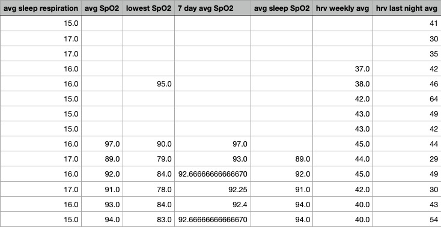
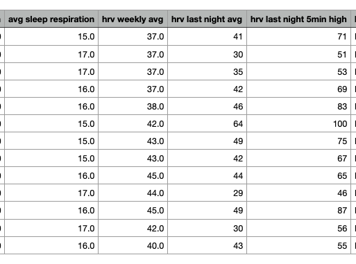
Cleaning Process
Two large issues were revealed when scanning for missing values. The SpO2-related columns (avg SpO2, lowest SpO2, 7-day avg SpO2, avg sleep SpO2) and the first rows of hrv weekly avg had blank values.
SpO2 data is missing for about the first week of collection because that tracking setting was not enabled on the watch yet. Due to this being truly missing values, the SpO2 columns were split into their own dataset rather than imputed. They were then dropped from the main working dataset. In the future, when more data is collected in this category and when other historical data is received from Elpis Alliance, re-adding the columns and removing the missing rows will be considered. In the meantime, this option preserves the SpO2 data for a future SpO2-specific dataset once more data accumulates from 9/12 onward.
The early gaps in hrv weekly avg are not the same problem as the missing SpO2 data. That metric is a rolling seven-day average, so it genuinely could not be calculated yet during the first few days of data collection. This data isn't truly missing; it just didn't exist yet. As such, backfilling those rows with the first real calculated weekly average was determined to be reasonable in this case, since it is not a fabricated calculation.
A separate issue was discovered while scanning for outliers. The most recent day in the dataset consistently showed unusually low values for metrics like resting and total calories, among others. This is a direct consequence of how the day is pulled. If a day's data is pulled before that day is over, metrics like calories and steps haven't finished accumulating yet. Rather than treat this as an actual low value, the most recent day is dropped from the dataset before analysis.
Remaining outliers (for example, a low REM sleep percentage on 9/5, or elevated heart rate and stress on certain nights) were reviewed individually rather than removed automatically. These reflect real recorded nights tied to known factors, such as late nights, nightly interruptions from pets or family members, or lifestyle factors like alcohol use, rather than data collection errors.
Exploratory Visualizations
Personal and cohort data compared
Personal data (N-of-1)
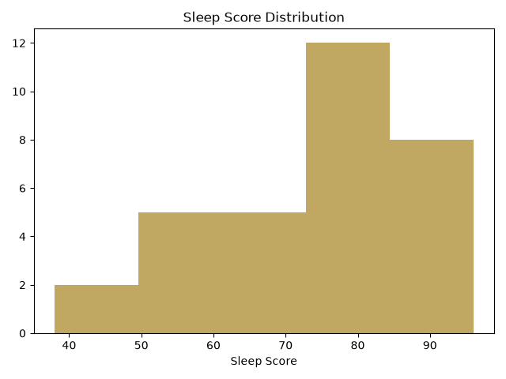
Cohort (98 participants)
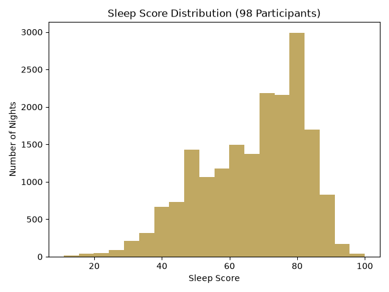
Personal data (N-of-1)
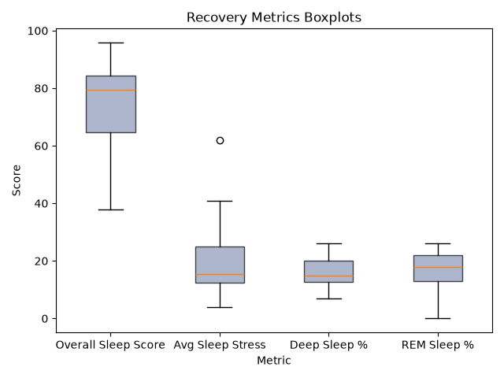
Cohort (98 participants)
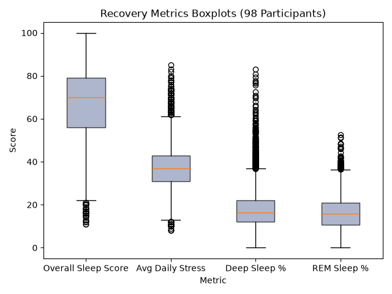
Personal data (N-of-1)
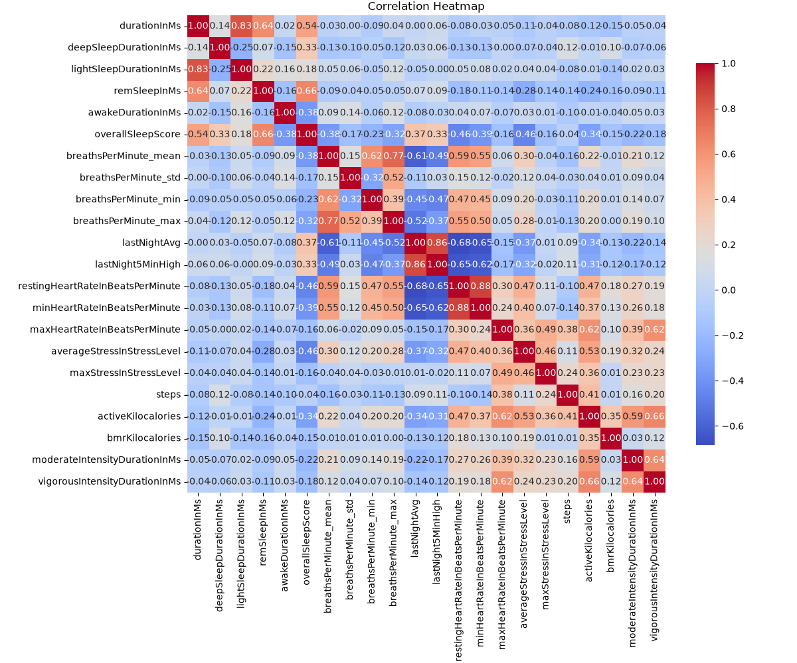
Cohort (98 participants)
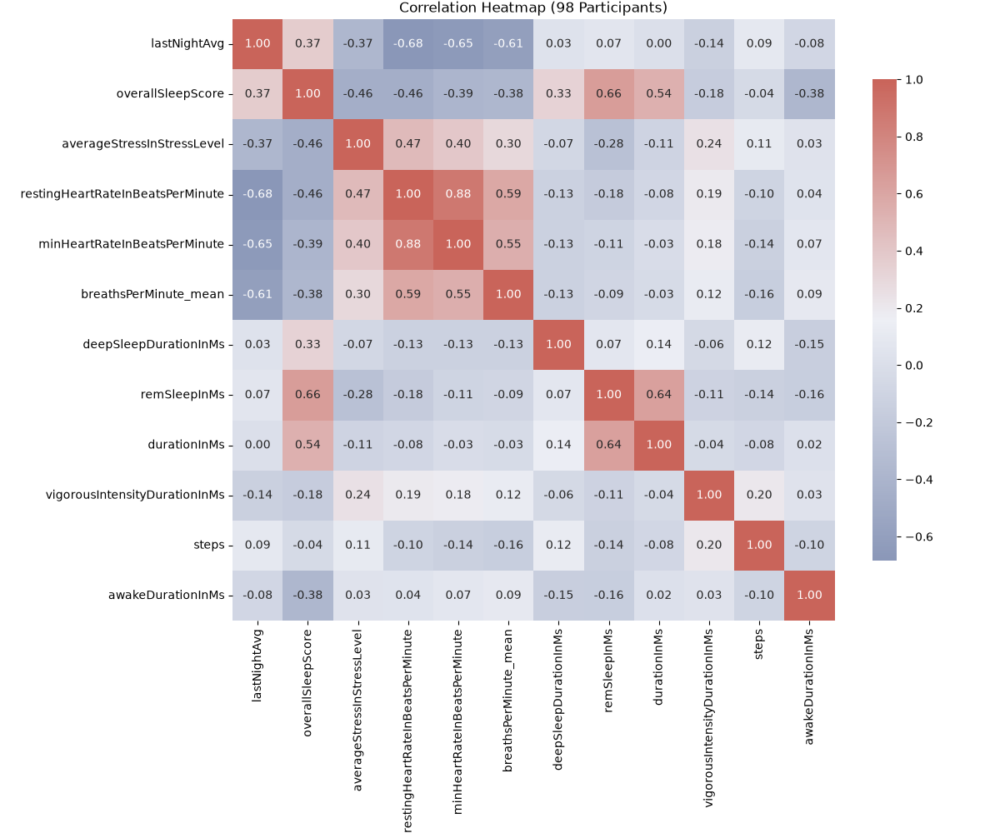
Personal data (N-of-1)
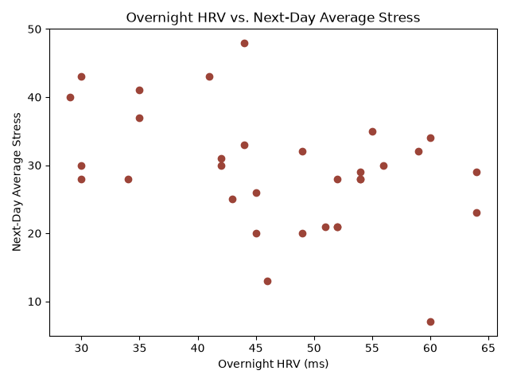
Cohort (98 participants)
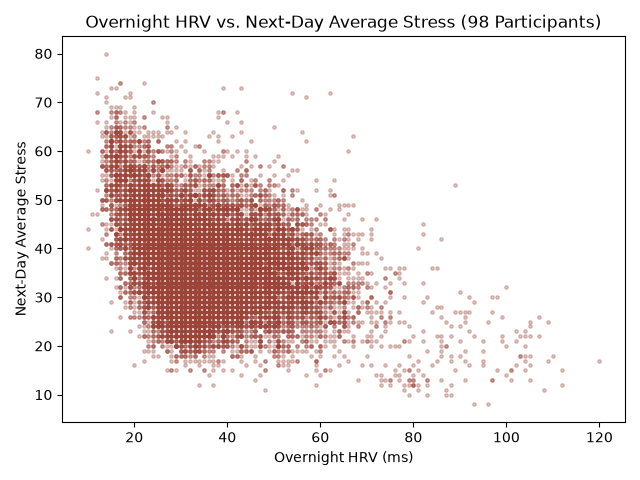
Personal data (N-of-1)
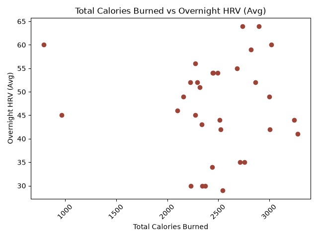
Cohort (98 participants)
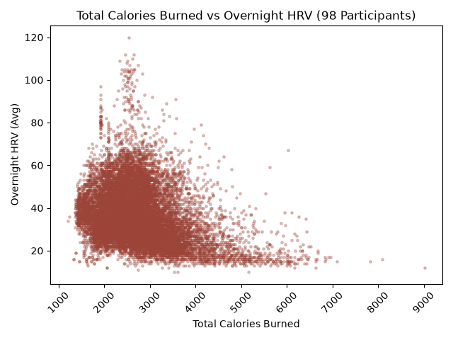
Personal data (N-of-1)
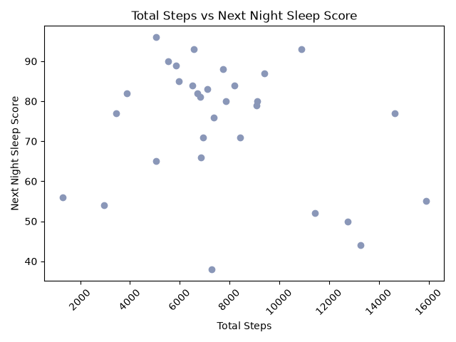
Cohort (98 participants)
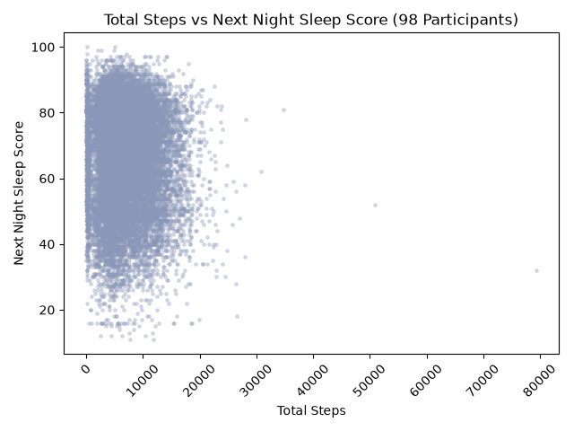
Personal data (N-of-1)
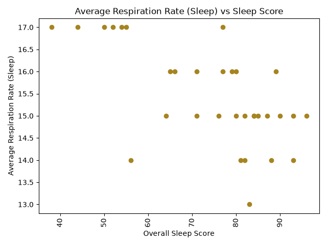
Cohort (98 participants)
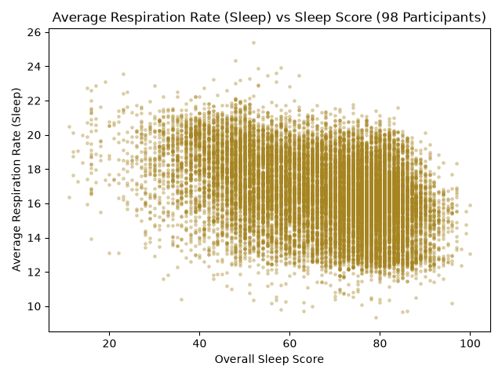
Personal data only
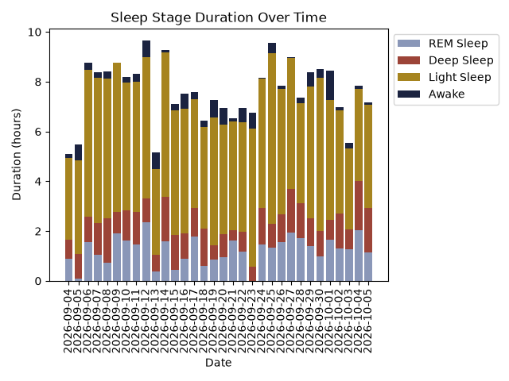
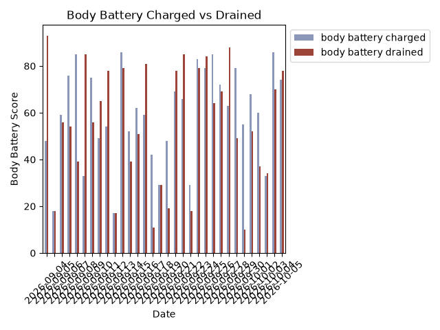
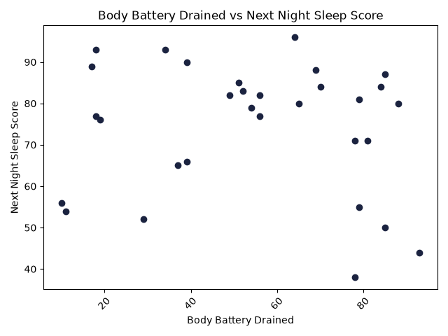
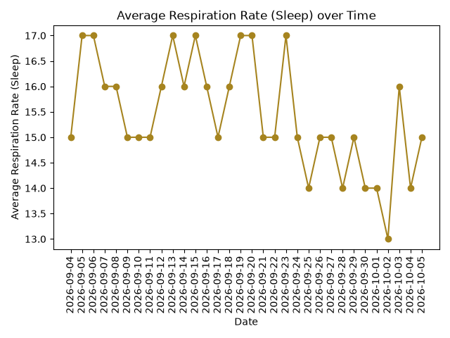
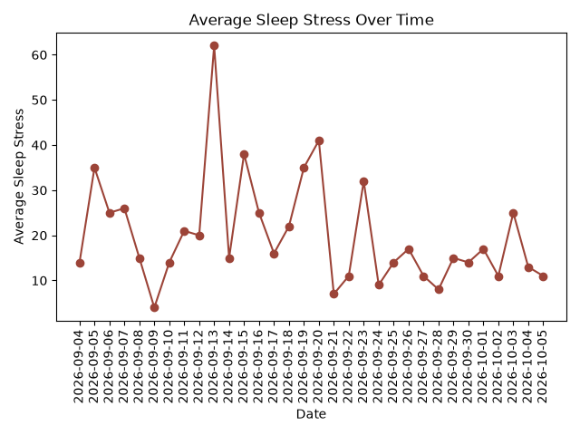
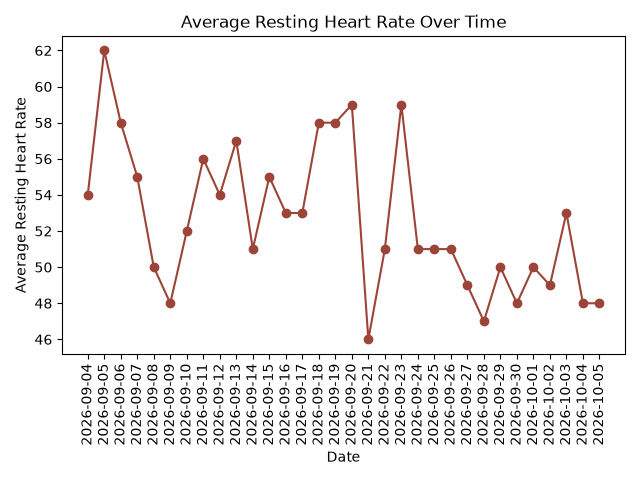
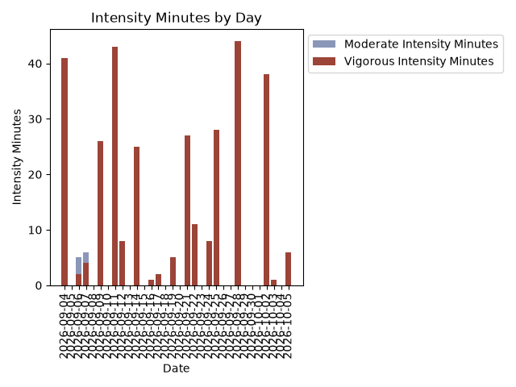